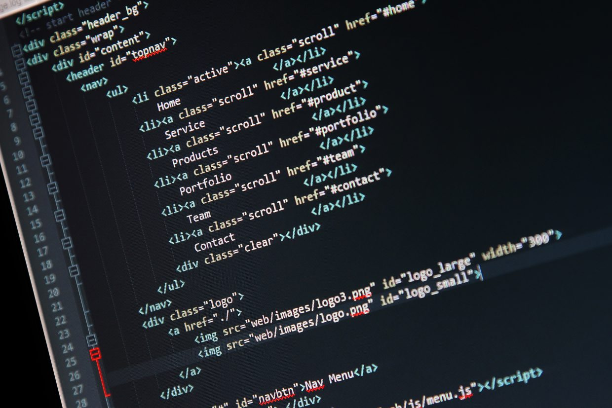

- Що таке семантична верстка?
- Чому семантична верстка сайту така важлива?
- Як реалізувати семантичну верстку сторінки?
Що таке семантична верстка?
Семантична верстка - це вивчення значень слів та виразів. У html ніщо інше як написання елементів із змістом. Семантичний елемент чітко описує своє значення як браузерів, так розробників.
Погляньмо на відмінність семантичного елемента від звичайного.
Наприклад div чи span — прості елементи, дивлячись них ми можемо зрозуміти якого типу контент у яких міститься. Це може бути просто текст, зображення або інші теги.
Тепер семантичні form, table, і article тут вже зовсім інша річ. Тільки прочитавши назви ми можемо легко зрозуміти що всередині цих тегів.
Приклад верстки звичайної та семантичної:
Сподіваюся на цьому етапі ви вловили різницю між типами тегів. Хочу відразу відзначити, що це не єдині теги, їх багато, а з появою html5 стало ще більше. Далі ми познайомимося із ними.
Чому семантична верстка сайту така важлива?

Добре написаний CSS може приховати від очей користувача погану верстку HTML. Але ми не можемо приховати її від пошукових роботів, плагінів браузера, читалок та інших інструментів та девайсів.
Тому семантична верстка є обов'язковою, якщо ви хочете щоб ваш сайт був доступний будь-яким відвідувачам з різноманітних пристроїв, і добре ранжувався в пошукових системах.
Не варто забувати і про текст, який теж має бути добре структурований, щоб користувачам було зручно читати.
Як реалізувати семантичну верстку сторінки?
Існує одне єдине правило, при написанні ми повинні використовувати теги, які в конкретному випадку можуть точно передати значення і тип контенту, пошуковим роботам і програмам.
Якщо немає потрібних тегів, то використовуємо типові т.к. div
Ми можемо згрупувати найбільш поширені та важливі елементи на чотири групи:
- Теги структури документа
- Текстові теги
- Медіа теги
- Кореляційні теги
Теги структури документа
У минулому елемент div був основним за допомогою якого створювалася структура HTML документа, W3C звернули увагу на те, що розробники використовували в назвах id і class слова header, footer, menu і т.д.
Які описували змістовий вміст елемента. Так і з'явилися нові семантичні теги HTML5
main: Елемент високого рівня використовується як контейнер для унікального вмісту на сторінці, який не повторюється на інших сторінках сайту.
footer: Використовується в основному для опису нижньої частини сторінки, зазвичай містить інформацію про автора, контакти, копірайт, додаткове меню та кнопку яка веде до верху сторінки.
nav: елемент для створення навігації сайтом. nav зазвичай знаходиться в header (хедері) та footer (футері), а також може бути використаний у aside (сайдбарі) сайту.
section: Описує розділи документа, повинен містити в собі заголовок h1 - h6
aside: Використовується для ідентифікації контенту, який пов'язаний із основним контентом на сторінці. Наприклад, елемент може містити визначення терміна в статті, рекламні оголошення, додаткову інформацію на сторінці.
article: Це самодостатній елемент, який використовується для опису статті сайту, блогу так само публікації на форумі. Може містити елемент header та footer.
Текстові теги
Існує безліч тегів для роботи з текстом на сторінці, але не всі вони є семантичні. Наприклад, можна використовувати span для стилізації тексту, але інформацію про вміст браузеру він не передає.
h1, h2, h3, h4, h5 та h6: використовуються для позначення заголовків. Найвищий рівень, або найголовнішим, заголовком є h1, за ним йдуть у порядку зменшення важливості заголовки рівня h2 - h6.
strong: тег надає тексту важливості, зазвичай відображається напівжирним шрифтом.
mark: використовується для виділення тексту у певному контексті. Наприклад, він може бути використаний, щоб виділити кожне входження ключа пошуку на сторінці результатів пошуку.
cite: тегом зазвичай позначають назви книг, пісень, фільмів, телевізійних передач.
blockquote та q: елементи використовуються для вставки цитати з тексту іншого джерела.
time: тег може бути використаний, щоб сказати браузеру, пошукачам та іншим пристроям, що конкретна частина контенту є час і дату.
Медіа теги
HTML5 також включає три теги, які визначають тип медіа контенту. Теги підказують браузеру як саме відображати цей контент. а так само вони надають значення для контенту.
audio: Використовується для додавання одного або декількох аудіо на сторінку, що відображається у вигляді аудіо плеєра.
video: подібний до аудіо тегу, але використовується для додавання відео контенту в документ.
picture: Елемент picture дає розробникам можливість більш гнучко відображати картинку на сторінці. Часто використовується в адаптивній верстці, тому що може містити відразу кілька картинок, які відображаються за певних медіа умов.
Кореляційні теги
Деякі теги використовуються для створення зв'язку між іншими елементами. Наприклад тег маркованого списку ul говорить браузеру, що елементи li пов'язані і повинні з'являтися в певному порядку. Є ще теги:
ol: тег нумерованого списку, аналогічний тегу ul
figure: використовується для угруповання такого контенту, як картинки, графіки, може містити заголовок figcaption.
address: описує контактну інформацію на сторінці. І пов'язує її з автором статті чи сторінки.
Якщо ви новенький в html, то спробуйте застосувати всі ці теги для створення семантичної верстки сторінки вже в наступному проекті. Не використовуйте елементи якщо не впевнені, чи потрібен він там чи ні, використання правильного тега дуже важливий момент. Краще витратите трохи часу для глибокого вивчення. Це дасть свої плоди у майбутньому.